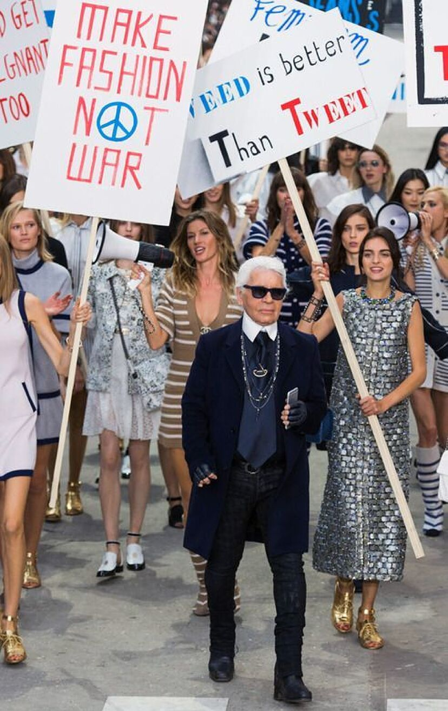
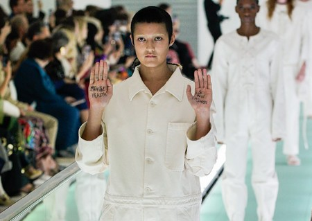
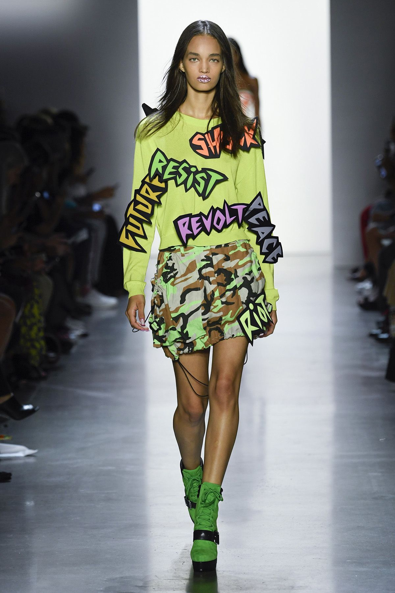
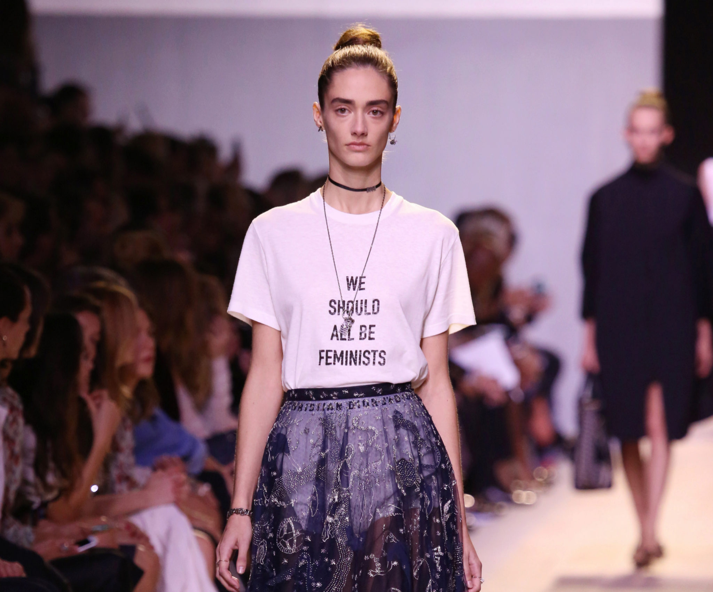

Outfit Code
Bienvenidos
Este sitio está dedicado a la moda como protesta. Acá voy a compartir información, listas y contenido interesante.
Es un proyecto personal donde puedo practicar HTML y aprender cómo se construye una página web desde cero.
"La ropa no significa nada hasta que alguien vive en ella"
-Marc Jacobs
Sabemos que la ropa no es solo una simple elección estética, sino un vehículo de comunicación social y cultural.
Sobre este tema
Interes personal
Mi fascinación por la moda nace de una observación simple pero poderosa: la ropa es la herramienta de comunicación más cotidiana y, a la vez, la más subestimada que poseemos. Me apasiona cómo algo tan íntimo como lo que elegimos vestir cada mañana puede transformarse en un motor de visibilidad para los temas que nos atraviesan como sociedad. Para mí, la moda es una de las formas más puras de arte; tiene la capacidad única de llegar a las personas, de incomodarlas o de inspirarlas, permitiéndonos decir absolutamente todo sin necesidad de pronunciar una sola palabra.

Introducción al tema
Como decía el diseñador Marc Jacobs, “la ropa no significa nada hasta que alguien vive en ella”. El verdadero peso de una prenda no reside en la percha de una tienda, sino en la calle, en la marcha y en el cuerpo de quien decide usarla para desafiar al mundo. Cuando la tela se habita con convicción, deja de ser un objeto inerte para convertirse en un manifiesto vivo. Históricamente, los escenarios más influyentes de la industria no solo han vendido tendencias; han secuestrado la atención global para obligarnos a mirar lo que preferimos ignorar. Desde Vivienne Westwood convirtiendo sus pasarelas en un grito desesperado contra el cambio climático, hasta Alexander McQueen transformando el dolor y la salud mental en arte crudo, o las recientes colecciones que denuncian la crueldad de la guerra y la urgencia del feminismo. La moda es, quizás, la forma de protesta más inmediata que tenemos. Cuando los diseñadores usan los reflectores de París, Milán o Nueva York para interpelar al espectador, demuestran que la moda no es algo insustancial: es, más bien, un espejo distorsionado —y profundamente rebelde— de nuestra propia sociedad.
Moda y Rebeldía:
5 hítos donde el estilo se volvió protesta
- Vivienne Westwood
- Es, desde sus inicios, la diseñadora más combativa del combativo mercado británico. Punk, irreverente y con un talento brutal para el performance, la inglesa ha protestado por el cambio climático, se ha unido al #Metoo y tiene su propio discurso sobre el consumismo. Su vuelta a las pasarelas para presentar la colección 18/19 fue un alegato contra el Brexit, la libertad de expresión y el calentamiento global.
- Katharine Hamnet
- Se atribuye a este icono de la moda la creación de las camisetas con mensajes reivindicativos. En 1984 se convirtió en el símbolo del activismo antinuclear cuando, tras ganar el premio a la diseñadora del año, aprovechó la invitación a una gala benéfica para lanzar un mensaje muy claro y muy delicado a Margaret Thatcher: Hamnet se presentó con una camiseta en la que ponía "58% Don't Want Pershing" (el 58% no quiere misiles nucleares Pershing). Desde entonces, no ha dejado de estampar recados para unos u otros en sus prendas.
- Levi's Strauss
- La marca de vaqueros más icónica del planeta lleva desde los años 90 involucrada en la batalla por la aprobación del matrimonio gay en EEUU. Fue la primera compañía del Fortune 500 que dio un paso al frente en un asunto político y siempre han esgrimido una cultura interna protectora y reivindicativa con los derechos de las parejas del mismo sexo.
- Dior
- El debut de Maria Grazia Chiuri para la casa en 2016 se recordará por ser el momento en el que Dior mostró una camiseta de casi 600 euros en la que se podía leer "We should all be feminist". Rihanna, Natalie Portman o Jennifer Lawrence se lanzaron a vestirla y, gracias al protagonismo que el movimiento feminista ha conquistado en los últimos años, la lista de espera para conseguirla todavía debe andar por la mitad.
- Chanel
- En la presentación de su colección primavera/verano de 2015, con Karl Lagerfeld todavía vivo, Chanel ambientó su puesta en escena que recreaba una protesta feminista.
Mi Top 5
Ranking personal de los hítos anteriores
- Vivienne Westwood
- Chanel
- Katharine Hamnet
- Dior
- Levi's Strauss
Reonociendo a Vivienne Westwood, sus características:
- Fue una icónica diseñadora de moda británica (1941-2022).
- Es reconocida como la principal impulsora de la estética punk y new wave
- A través de su tienda en Londres, "Sex", revolucionó la industria llevando la rebeldía, los corsés y la política a la alta costura, convirtiendose en una figura visionaria y activista ambiental.
(Re)Evolución de la moda como manifiesto
La moda no siempre ha sido solo cuestión de estética; en muchas ocasiones, ha funcionado como un manifiesto visual y una herramienta de resistencia cultural. Movimientos como el hippie en los años 60, que abrazó la psicodelia y lo artesanal como rechazo al consumismo y la guerra, o el punk en los 70, que utilizó el "hazlo tú mismo" (DIY) y el ruidoso inconformismo para escupir frente a la crisis económica y el sistema de clases, demuestran que la ropa puede ser un grito de protesta. A estos se suma el grunge de los 90, que nació en los suburbios de Seattle como una respuesta apática y anti-comercial al glamur excesivo de la década anterior, priorizando la comodidad descuidada sobre la perfección estética.
Comparativa de estilos de protesta
| Movimiento | Ideología central | Elemento visual clave | Grito de protesta contra... |
|---|---|---|---|
| Hippie | Paz, amor libre y retorno a la naturaleza. | Estampados tie-dye, flores y telas fluidas. | El materialismo y los conflictos bélicos (Guerra de Vietnam). |
| Punk | Anarquía, nihilismo y rebelión individual. | Alfileres de gancho, cuero, tachuelas y crestas. | El establishment, la monarquía y la falta de futuro económico. |
| Grunge | Autenticidad, apatía y rechazo a la fama. | Camisas de franela a cuadros, jeans rotos y botas viejas. | La superficialidad de la industria de la moda y el consumismo corporativo. |
Una galería de moda y mensaje
Multimedia
Imagenes



Enlace externo
Más información en este enlace